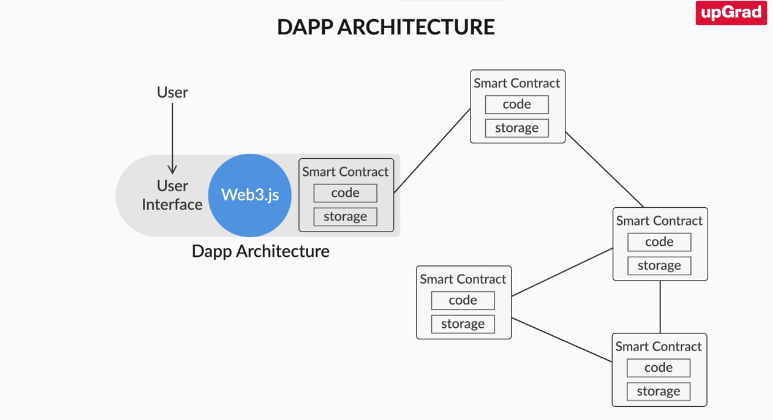

Lifecycle of a Smart Contract
As you learnt in the previous segments, a contract is defined using the following four main elements:
- State Variables
- Functions
- Function Modifiers
- Events
Now let's take a look at what happens at the time of installation of a smart contract over a network and what
happens before a smart contract is destroyed. Let us now look into the life cycle of a smart contract in
Solidity.
There are two major elements that define the birth and death of a smart contract in Solidity. They are:
Introduction to Ethereum
Ethereum was built to overcome several challenges and inefficiencies faced by the Bitcoin Blockchain such as:
- Unlike Bitcoin, whose sole purpose was to transfer a digital cryptocurrency, Ethereum developers
wanted to
build a Blockchain that is not specific to only one purpose and, instead, could be used to build various
applications and not just a payments alternative.
-
Ethereum developers also wanted to solve the mining inefficiency of the Bitcoin network. For this,
they
wanted to move to some other algorithm than Proof of Work (POW).
-
'Proof of Stake' (POS) is what Ethereum has built into its architecture to replace Proof of Work. But
POS is
still not implemented on Ethereum, and research is continuing on how to implement POS on Ethereum.
Ethereum
still uses POW for mining.
Ethereum was developed in 2013 by a 19-year-old college student Vitolik Buterin as part of his college summer
project. Ethereum raised USD 18 million by initial coin offering and, recently, its market capitalisation was
USD 70 billion. Today, Ethereum hosts more than 90% of the new tokens on its platforms. The point to note here
is that Ethereum was the first blockchain in the world to successfully implement the concept of Smart Contracts
which allowed users to create distributed apps (Dapps) over Ethereum. Now, let’s look at what Ethereum is.
The Ethereum blockchain is essentially a transaction-based state machine. In Computer Science, a state machine
refers to something that will read a series of inputs and, based on those inputs, will transition to a new
state. The Ethereum blockchain starts from the genesis (first) state, and after every transaction, the state of
the entire blockchain changes. Unlike Bitcoin, which follows the UTXO model and stores everything on the chain,
Ethereum stores all accounts off-chain. This list of all accounts defines the state of Ethereum at that moment.
Whenever a transaction occurs between two accounts, the state of those two accounts changes and, hence, the
state of the entire list changes. This new state now becomes the current state of the Ethereum. The transactions
are stored on the blockchain, thus ensuring the immutability of the states of accounts which are stored
off-chain. This can be a little confusing at the moment. But don’t worry - we will look into the details of the
state transition model at later stages.
Architecture overview
Architecture overview
In the previous segment, you got a brief introduction to Ethereum. Simply put, Ethereum is a transaction-based
‘State Transition Machine’, which changes to a new state with each new transaction. This explanation will get
clearer as you learn the architecture of Ethereum. In the following video, our expert Nishant will walk you
through the generic architecture of any particular blockchain network.
the Blockchain network can be broadly classified into the following layers:
Storage layer: Any kind of data created can be stored in a basic file system or a database. Usually, Ethereum
uses databases such as LevelDB or RockDB to store the state of the whole network and other data.
Network layer: Information like transactions are sent from one node to another in a Blockchain network. This can
be done using different messaging protocols. In Ethereum, we use a protocol called JSON - RPC to communicate
between nodes.
Protocol layer: Data and network layers are present in any normal network. How do we make out the difference
between any network and a Blockchain network? This is defined by the protocol layer. This layer is majorly
composed of the consensus protocols of the Blockchain network.
Application layer: This is the layer which differentiates between Bitcoin and Ethereum. The application layer
defines the various kinds of conditions that can be written on top of the three layers for any particular
application. It includes smart contracts which define what your application logic can be.
You can visualise the layers through the following diagram:

Ether and Gas
To understand Ethereum at a granular level, you need to understand its core components like the network
currency, the transaction process, how a block is added to the network and many more. Let’s start by looking at
Ether and Gas - the cryptocurrency and transaction cost of the Ethereum network, respectively.
Let’s delve deep into the core components: Ether and Gas:
-
Ether is the currency internal to Ethereum used to pay transaction fees to miners.
-
Don’t confuse this with rewards and transaction fees. Those are two separate entities.
-
A miner is rewarded when its block gets selected in the blockchain. However, a miner is not only
rewarded on mining the block successfully but also receives a transaction fee for each transaction in
the block that it mines.
-
Rewards are given by the system or the Blockchain while the transaction fee is paid by the user who
performed that transaction.
-
In Ethereum, there is a defined process to calculate the transaction fee. For example if current Ether
reward for mining a block is 2 Ethers. Hence, on mining a block, a miner receives 2 Ethers + the
transaction fee for each transaction in the block.
Gas:
-
The transaction fee is calculated by measuring the amount of computational power spent by a miner in
running that particular transaction.
-
These computational cycles are measured in a unit called Gas. In other words, Gas is the unit used
to measure the fees required for a computation.
-
For each Gas that the miner spends to run a transaction, it is paid in Ethers. This is called the
Gas Price.
So, gas price is the number of Ethers paid per unit of Gas spent by the miner for running a
transaction. This gas price is paid by the sender of the transaction to the miner. Gas price is
measured in the unit Gwei. Just like Bitcoin, Ether also has multiple denominations. The smallest
unit in Ether is Wei.
1 Gwei = 10^9 Wei.
1 Ether = 10^18 Wei.
We learnt about Gas and Gas price. How does Ethereum ensure that the miner is not spending more Gas than
required?
The answer is Gas Limit. The Gas Limit for a transaction is defined as the maximum amount of Gas
required to run a particular transaction. Hence, the transaction limit = Gas Limit x Gas Price.
Now, let’s look at how a transaction is processed and how Gas is consumed.
Some important pointers to be noted
-
Gas price and Gas limit are set by the sender for every transaction.
-
If excess Gas remains, it is returned to the sender.
-
And if all the Gas is consumed before the transaction is completed, then the transaction fails
due to the shortage of Gas and no Gas is returned to the sender.
-
Hence, the calculations to gauge how much Gas would be needed for each transaction need to be
done correctly, else your transaction would fail and you would also lose the Gas that you sent
with the transaction.
-
Gas is not only used to pay for computation steps, it is also used to pay for storage use. So, a
sender also needs to pay a fee for storage use.
"Gas" is the name for a special unit used in Ethereum. It measures how much "work" an action or set of
actions takes to perform: for example, to calculate one Keccak256 cryptographic hash it will take 30 gas
each time a hash is calculated, plus a cost of 6 more gas for every 256 bits of data being hashed. Every
operation that can be performed by a transaction or contract on the Ethereum platform costs a certain
number of gas, with operations that require more computational resources costing more gas than
operations that require few computational resources.
The reason gas is important is that it helps to ensure an appropriate fee is being paid by transactions
submitted to the network. By requiring that a transaction pay for each operation it performs (or causes
a contract to perform), we ensure that network doesn't become bogged down with performing a lot of
intensive work that isn't valuable to anyone. This is a different strategy than the Bitcoin transaction
fee, which is based only on the size in kilobytes of a transaction. Since Ethereum allows arbitrarily
complex computer code to be run, a short length of code can actually result in a lot of computational
work being done. So it's important to measure the work done directly instead of just choosing a fee
based on the length of a transaction or contract.
So if gas is basically a transaction fee, how do you pay it? This is where it gets a little tricky.
Although gas is a unit that things can be measured in, there isn't any actual token for gas. That is,
you can't own 1000 gas. Instead, gas exists only inside of the Ethereum virtual machine as a count of
how much work is being performed. When it comes to actually paying for the gas, the transaction fee is
charged as a certain number of ether, the built-in token on the Ethereum network and the token with
which miners are rewarded for producing blocks.
This might seem odd at first. Why don't operations just have a cost measured in ether directly? The
answer is that ether, like bitcoins, have a market price that can change rapidly! But the cost of
computation doesn't go up or down just because the price of ether changes. So it's helpful to separate
out the price of computation from the price of the ether token, so that the cost of an operation doesn't
have to be changed every time the market moves.
The terminology here gets a little messy. Operations in the EVM have gas cost, but gas itself also has a
gas price measured in terms of ether. Every transaction specifies the gas price it is willing to pay in
ether for each unit of gas, allowing the market to decide the relationship between the price of ether
and the cost of computing operations (as measured in gas). It's the combination of the two, total gas
used multiplied by gas price paid, that results in the total fee paid by a transaction.
As tricky as it is, it's important to understand this distinction, because it results in one of the most
confusing things about Ethereum transactions to the initial learner: there is a difference between your
transaction running out of gas and your transaction not having a high enough fee. If the gas price I set
in my transaction is too low, no one will even bother to run my transaction in the first place. It will
simply not be included in the blockchain by miners. But if I provide an acceptable gas price, and then
my transaction results in so much computational work that the combined gas costs go past the amount I
attached as a fee, that gas counts as "spent" and I don't get it back. The miner will stop processing
the transaction, revert any changes it made, but still include it in the blockchain as a "failed
transaction", collecting the fees for it. This may seem harsh, but when you realise that the real work
for the miner was in performing the computation, you can see that they will never get those resources
back either. So it's only fair that you pay them for the work they did, even though your badly designed
transaction ran out of gas.
Providing too big of a fee is also different than providing too much ether. If you set a very high gas
price, you will end up paying lots of ether for only a few operations, just like setting a super high
transaction fee in bitcoin. You'll definitely be prioritised to the front of the line, but your money is
gone. If you provided a normal gas price, however, and just attached more ether than was needed to pay
for the gas that your transaction consumed, the excess amount will be refunded back to you. Miners only
charge you for the work that they actually do. You can think of the gas price as the hourly wage for the
miner, and the gas cost as their timesheet of work performed.
There are a lot of other subtleties to gas, but that should give you the basics! Gas is the key
mechanism that makes the complex computations in Ethereum "safe" for the network to work on, because any
programs that run out of control will only last as long as the money provided by the people who
requested they be run. When the money stops, the miners stop working on it. And the mistakes you make in
your program will only affect the people who pay to use it--the rest of the network can't suffer
performance issues due to your error. They will simply get a big payday when the performance issues
consume all of your ether! Without this critical technique, the idea of a general-purpose blockchain
would have been completely impossible.
Gas is the way that fees are calculated
The fees are still paid in ether, though, which is different from gas
The gas cost is the amount of work that goes into something, like the number of hours of labour, whereas
the gas price is like the hourly wage you pay for the work to be done. The combination of the two
determines your total transaction fee.
If your gas price is too low, no one will process your transaction
If your gas price is fine but the gas cost of your transaction runs "over budget" the transaction fails
but still goes into the blockchain, and you don't get the money back for the work that the labourers
did.
This makes sure that nothing runs forever, and that people will be careful about the code that they run.
It keeps both miners and users safe from bad code!
Ethereum Networks
An Ethereum network is a blockchain built of multiple nodes. These nodes can exist anywhere in the world.
Together, they constitute an Ethereum network. As mentioned in the video, there are multiple such Ethereum
networks; they are independent of each other, and anyone can create their own private Ethereum network. They are
defined or identified by a unique parameter called Chain ID. You can build your own private Ethereum network
with a chain ID that does not belong to any of the existing networks on Ethereum. There are three main public
Ethereum networks that you should know about:
- Frontier: Frontier is the main public network; this is the blockchain network that we refer to
when we
talk
about Ethereum. It is this network where ethers have real values. Frontier's chain ID is 1.
-
Ropsten: Ropsten is the most popular test network. Before deploying your applications on the main
Frontier
network, you should test them on Ropsten. Ropsten is identical to the Frontier network, but the
ethers here have
no real value. Ropsten's chain ID is 3.
-
Rinkeby: Rinkeby is the most popular test network with the proof of authority (PoA) mining
algorithm.
It is
similar to the Ropsten network, except that the mining algorithm used in Rinkeby is PoA. You can test
your smart
contracts or applications on Rinkeby before deploying them on a blockchain network that uses the PoA
mining
algorithm. Rinkeby's chain ID is 4.
Ethereum Clients
There are multiple Ethereum networks in the world. Each network consists of several interconnected nodes. To
connect to a network, you need to be aware of the chain ID of that network because you can only refer to the
network using the network's unique chain ID. After this, you need to become a node for that network. For this,
you need to download an Ethereum client on your machine and then connect to the network through that. This is
important because you can only connect to a network as an Ethereum client. Ethereum developers did not create an
Ethereum client. Instead, they released a yellow paper called Protocol; anyone can create her own version of
Ethereum client using the instructions mentioned in the Protocol. The most popular Ethereum client
implementations are Go Ethereum (Geth), Parity and Cpp-Ethereum (Aleth). Go Ethereum is one of the oldest and
most popular Ethereum clients and is implemented in Go language. Parity is implemented in Rust language, while
Cpp-Ethereum or Aleth is implemented in C++. Trinity is another popular Ethereum client. You will work with Go
Ethereum as part of this module. A network does not differentiate between the different types of Ethereum
clients. It does not matter which client you are using to connect to the network; the network only sees you as
an Ethereum client.

Introduction to Go Ethereum(Geth)
Go Ethereum is available as a standalone CLI client called Geth. You can install Geth in any operating system.
Using Geth, you can connect to any Ethereum network, a private network that you will learn to build in the
coming segments, testing networks like Ropsten and the main network, that is, Frontier. In the next segment, you
will learn how to install Geth using Geth CLI installation instructions.
Geth Installation on MacOS system:
Open the Terminal and Run the following commands to add the tap , install geth and check the geth
version:
brew tap ethereum/ethereum
brew install ethereum
geth version
Setting up an Ethereum Private Network
The steps are as follows:
-
Create a Geth client: Connect to a private network.
-
Create two accounts on this Geth client.
-
Transfer ethers from one account to the other.
-
Create a second peer/node: Join the same private network.
- create a folder named "ethereumprivatenetwork" and go to the folder in terminal
dir ethereumprivatenetwork
cd ethereumprivatenetwork
code . // open the folder in visual studio code
- Create genesis.json file
a).Create genesis.json file in the VSCode ediotr inside the ethereumprivatenetwork folder
the JSON file contains key-value pairs.
1. The alloc object contains account address and the amount of ethere stored in that account.
EX:
{
"alloc": {
0x3243424345345234234234234234: 100,
0x3423471287349823462873462834: 50
}
}
b). The config object contains the chainid remaining all are optional
{
"config" :
{
"chianId" : 2021
"homesteadBlock": 20000, // this specifies at block no 200000, all the features of the ethereum homestead
version is supported
"DAOForkBlock" : 0, //from which block number does it support DAO
"DAOForkBlockSupport" : true,// does our network support DAOForkBlock
"eip155Block": 0
}
}
c). base block settings (difficulty, gasLimit, nonce, ... )
{
"difficulty" : 0x400,
"gasLimit": 0x324234,
"nonce": 0x34234234234234,
"mixhash": 0x000000000000000000000000000000000000000000000000000000000000,
"coinbase" 0x000000000000000000000000000000000000000000000000000000000000, // the address where the rewards are
going to
"extraData": "",
"timestamp": 0x00
}
Since we are creating our own private network, we can use the following values in the genesis.json file
{
"alloc": {},
"config": {
"chainId": 2019,
"homesteadBlock": 0,
"DAOForkBlock": 0,
"DAOForkSupport": true,
"eip150Block": 0,
"eip155Block": 0
},
"difficulty": "0x400",
"gasLimit": "0x989680",
"nonce": "0x0000000000000042",
"mixhash": "0x0000000000000000000000000000000000000000000000000000000000000000",
"coinbase": "0x0000000000000000000000000000000000000000",
"parentHash": "0x0000000000000000000000000000000000000000000000000000000000000000",
"extraData": "",
"timestamp": "0x00"
}
- Go back to terminal and Specify the folder/path where the private chain data needs to be stored
geth --datadir ./datadir init ./genesis.json
The output is:
Welcome to the Geth JavaScript console!
instance: Geth/v1.10.13-stable/darwin-amd64/go1.17.2
at block: 0 (Thu Jan 01 1970 05:30:00 GMT+0530 (IST))
datadir: ./ethPrivateNetwork/datadir
modules: admin:1.0 debug:1.0 eth:1.0 ethash:1.0 miner:1.0 net:1.0 personal:1.0 rpc:1.0 txpool:1.0 web3:1.0
- create a new blockchain network using the following command
geth --datadir ./datadir/ --networkid 2019 console
This command is going to create a new blockchainnetwork and it will start a console with which you can
access the different APIs that are available for this private blockchain network you have created.After
you press enter the network will start with a network id of 2019
-
create an account using personal API and provide a password as input parameter for the new account.
personal.newAccount('Rajasekhar')
Output:
personal.newAccount("Rajasekhar")
INFO [12-02|19:14:00.249] Your new key was generated address=0xA4a34A386edb30353847c076eFDC7af7C2f8e5D7
WARN [12-02|19:14:00.252] Please backup your key file! path=/Users/rajasekhar/Documents/-Blockchain/-Upgrad/EthereumProjects/ethPrivateNetwork/datadir/keystore/UTC--2021-12-02T13-43-58.757793000Z--a4a34a386edb30353847c076efdc7af7c2f8e5d7
WARN [12-02|19:14:00.252] Please remember your password!
"0xa4a34a386edb30353847c076efdc7af7c2f8e5d7"
personal.newAccount("Rajasekhar")
INFO [12-02|19:14:24.920] Looking for peers peercount=0 tried=96 static=0
INFO [12-02|19:14:25.613] Your new key was generated address=0x464B1f14eD17674b1Dda2F443Db24e40b5f35C1D
WARN [12-02|19:14:25.613] Please backup your key file! path=/Users/rajasekhar/Documents/-Blockchain/-Upgrad/EthereumProjects/ethPrivateNetwork/datadir/keystore/UTC--2021-12-02T13-44-24.190178000Z--464b1f14ed17674b1dda2f443db24e40b5f35c1d
WARN [12-02|19:14:25.613] Please remember your password!
"0x464b1f14ed17674b1dda2f443db24e40b5f35c1d"
When you go inside of your project directory and inside the keystore folder there is a new keystore f
ile which is the file for this new account which you have created.
Next using the same command create another account with the same password. In your keystore folder, you
will see that another file has been created.
By using the command “ eth.coinbase” you can check the coinbase for your private network.
eth.coinbase
INFO [12-02|19:18:03.072] Etherbase automatically configured address=0xA4a34A386edb30353847c076eFDC7af7C2f8e5D7
"0xa4a34a386edb30353847c076efdc7af7c2f8e5d7"
Coinbase is
that account which will collect the ether rewards for mining on your particulargethnode.
By default,the first account that you created on the node will become the coinbase account.
If you want to change the coinbase you can do so using the command
miner.setEtherbase(‘new account ID that is to be made new coinbase account’).
EX:
miner.setEtherbase('0x464b1f14ed17674b1dda2f443db24e40b5f35c1d')
Output: true
-
To check ether balance in accounts you can use the following command:
eth.getBalance(‘account ID’)
EX: eth.getBalance('0x464b1f14ed17674b1dda2f443db24e40b5f35c1d')
Output: 0
This will return you the balance in Wei and not in ether. You can also use the following command:
eth.getBalance(eth.coinbase)
eth.getBalance(eth.coinbase)
Output: 0
This will return the balance of your coinbase in Wei.
-
The next step is to start the mining process. The command for the same is
miner.start()
EX: miner.start()
INFO [12-02|19:50:29.772] Updated mining threads threads=8
INFO [12-02|19:50:29.773] Transaction pool price threshold updated price=1,000,000,000
null
> INFO [12-02|19:50:29.773] Commit new mining work number=1 sealhash=655d9b..2814cb uncles=0 txs=0 gas=0 fees=0 elapsed="680.279µs"
INFO [12-02|19:50:34.158] Commit new mining work number=2 sealhash=5910e9..bea1a9 uncles=0 txs=0 gas=0 fees=0 elapsed="95.535µs"
INFO [12-02|19:50:34.158] Successfully sealed new block number=1 sealhash=655d9b..2814cb hash=3581d6..b3acf5 elapsed=4.385s
INFO [12-02|19:50:34.159] 🔨 mined potential block number=1 hash=3581d6..b3acf5
INFO [12-02|19:50:34.315] Successfully sealed new block number=2 sealhash=5910e9..bea1a9 hash=a38462..8f9dd9 elapsed=157.293ms
INFO [12-02|19:50:36.732] 🔗 block reached canonical chain number=1 hash=3581d6..b3acf5
INFO [12-02|19:50:36.733] 🔨 mined potential block number=8 hash=269cdc..81c62a
INFO [12-02|19:50:36.733] Commit new mining work number=9 sealhash=8e9e73..f30106 uncles=0 txs=0 gas=0 fees=0 elapsed="877.932µs"
INFO [12-02|19:50:36.933] Successfully sealed new block
When you first start the mining process it’s going to create a new process called DAG generation. It
will only happen for the first time you start mining on your computer. The process can take a
considerable amount of time depending on your computer resources and processing power of your computer.
You will see that new blocks are now being mined on to your computer and all of these blocks have zero
transactions.
To stop the mining process you need to issue the following command:
miner.stop()
Ex: miner.stop()
null
The mining process is not going to stop unless the DAG creation process is completed. Once the DAG
generation is complete mining process will stop automatically.
-
Using the following command
eth.blockNumber
Ex: eth.blockNumber
907
you can see what is the last block number on your private network.
-
To check the balance in ethers you use the following command:
web3.fromWei(eth.getBalance(eth.coinbase))
EX: web3.fromWei(eth.getBalance(eth.coinbase))
4535
This will return to you the ether value instead of the Wei v alue.
Using eth.accounts command we can get the list of accounts on your network.
-
input: eth.sendTransaction({from: eth.accounts[1], to: eth.accounts[0], value: web3.toWei(10, "ether")})
output: > WARN [12-02|20:26:00.491] Served eth_sendTransaction
reqid=46 t=2.642296ms err="authentication needed: password or unlock"
Error: authentication needed: password or unlock
at web3.js:6357:37(47)
at send (web3.js:5091:62(35))
at :1:20(21)
inPut: eth.accounts
output:
["0xa4a34a386edb30353847c076efdc7af7c2f8e5d7", "0x464b1f14ed17674b1dda2f443db24e40b5f35c1d"]
input:personal.unlockAccount("0x464b1f14ed17674b1dda2f443db24e40b5f35c1d", "Rajasekhar")
true:
input: eth.sendTransaction({from: eth.accounts[1], to: eth.accounts[0], value: web3.toWei(10, "ether")})
output: >
INFO [12-02|22:22:06.165] Setting new local account address=0x464B1f14eD17674b1Dda2F443Db24e40b5f35C1D
INFO [12-02|22:22:06.167] Submitted transaction hash=0x2465db560393cef23bc30bc2013e9f37089c719fa2cd91f9987c185ec191e028 from=0x464B1f14eD17674b1Dda2F443Db24e40b5f35C1D nonce=0 recipient=0xA4a34A386edb30353847c076eFDC7af7C2f8e5D7 value=10,000,000,000,000,000,000
"0x2465db560393cef23bc30bc2013e9f37089c719fa2cd91f9987c185ec191e028"
input: eth.getBalance('0x464b1f14ed17674b1dda2f443db24e40b5f35c1d')
output: 5.6e+21
input: eth.getBalance(eth.coinbase)
output: 6.635e+21
This command will send the specified amount of ethers which is 10 in this case from the 2nd account to
the 1st account.
When you press enter you will get an error saying that you need a password to unlock this account.
-
The following command is used to unlock an account:
personal.unlockAccount(‘account ID’, ‘password’)
EX : input:personal.unlockAccount("0x464b1f14ed17674b1dda2f443db24e40b5f35c1d", "Rajasekhar")
output: true
After that just re-run the command which you tried to run in the previous step. Now you see that the
transaction has been submitted.
When you try to check the balance of the 1st account you will see that it is still zero. This is because
the transaction has still not been committed to the blockchain. You need to start the mining process
again using miner.start() command. When you press enter you will see that one of the blocks has
transaction as 1. Then stop the mining process again using the miner.stop() command.
After this if you check the balance of the 1st account you will get a value returned to you which will
be in Wei.
-
Using the command admin.peers you can check which are the peers that this particular ethereum client
is connected to.
When you run this command you will see that there are no peers that this ethereum client is connected
to.
input:admin.peers
output: []
-
Open a new tab in your terminal. We will now be creating a new peer which means we will be starting a
new geth c lient on the same computer.
Now in the new tab type in the following command and press enter:
geth --datadir ./datadir2 init ./genesis.json
The data dir2 will be the chain code directory for the second client that we are now creating. Inside
your project
folder, there are now two directories-one for the first peer and one for the second peer.
-
Now you need to start the console for the second peer. You need to run the following command and press
enter:
geth --datadir ./datadir2 --networkid 2019 --port 30304 console
Also for this peer, you need to define the port number. By default, the port number is 30303 which in
this case has been taken by the first client. So the port number has been kept as 30304.
When you run this command the second peer has joined the same network but at a different port number
i.e. 30304.
Now if you go to the 1st tab and run the command admin.peers you will still see that there are no
peers in the network. This is because the peers have to be connected manually in private networks.
-
Inside peer1 type the command admin.nodeInfo.enode and press enter.Thiswillreturn you the
enode ID for this particular node.
input: admin.nodeInfo.enode
output: "enode://0e417598272c7ac4d3cc4546f0b6207a0106bd98fa3c59b1ace37dfa5c981f5b0b66c1d2185f3f4f2dcc2a18d70d8f1ca216dbe8e08996b14270d8726adf5494@127.0.0.1:30303"
-
After getting the enode ID of the first peer, go back to the second peer and inside the console for
the second peer, run the following command:
admin.addPeer(“enode ID of the first peer”).
EX: input:
admin.addPeer("enode://0e417598272c7ac4d3cc4546f0b6207a0106bd98fa3c59b1ace37dfa5c981f5b0b66c1d2185f3f4f2dcc2a18d70d8f1ca216dbe8e08996b14270d8726adf5494@127.0.0.1:30303")
output true
When you paste the ID of the first peer make sure that the IP address is a local-host IP address. So if
your IP address for your first peer is anything but 127.0.0.1 you need to change it to “127.0.0.1”.
After you do this press enter.
Now if you run admin.peerscommand you will see that peer1 has been added inside peer2.
Now you have connected two peers to each other and they are part of the same private network that we
have built as part of ethereum.
Difference between Ganache and Truffle frameworks
Truffle is a development environment, testing framework and asset pipeline for Ethereum, aiming to make
life as
an Ethereum developer easier. With Truffle, you get: Built-in smart contract compilation, linking, deployment
and binary management.
Ganache is an ethereum client which one can use for Ethereum development.
Ganache is part of Truffle ecosystem. You can use ganache for the development of DAPP and once it is
developed
and tested on the ganache you can deploy your DAPP on ethereum client like geth or parity.
Truffle will enable you to develop, test and deploy your DAPP.
Ganache allows you to create a private Ethereum blockchain for you to run tests, execute commands, and
inspect
state while controlling how the chain operates. It gives you the ability to perform all actions you would on the
main chain without the cost. Many developers use this to test their smart contracts during development. It
provides convenient tools such as advanced mining controls and a built-in block explorer.
Truffle is a developer environment, testing framework and asset pipeline for blockchains. It allows
developers
to spin up a smart contract project at the click of a button and provides you with a project structure, files,
and directories that make deployment and testing much easier (or else you would have to configure these
yourself).
under which circumstance we use either of them
As a developer, you would spin up a Truffle (truffle init) project that lays out the structure of your project.
Once you start coding a little bit, you will want to test the code, but need a blockchain to do so. Now you run
Ganache to be this blockchain. In your deployment file (a file that Truffle gives you when you create a
project), you can point your project to either use Ganache or to use the main network. You can then run truffle
migrate (which automatically runs truffle compile for you), to deploy the contracts with the data you provided
in the migration files.
What are the limitations of each
Truffle isn't really limited in that all it is doing is providing a framework for you to sculpt a project in.
The only "limitation" would simply be the features they may not have added yet.
Ganache is a little different, in that it is attempting to mimic the main network. There are a few problems
here:
There are no miners on Ganache. Because of this, you cannot accurately mimic miner actions on the main network.
As an example, say you wanted to send a transaction that filled almost all of the block. You can set the block
height to 7M on Ganache and send a 6.9M transaction no problem. On the main network (depending on the current
throughput), this transaction may or may not ever get mined.
The gasLimit on the main network is a moving target (it can be changed by miners. If, for some reason, you are
depending on an exact number (as you can set in Ganache), you may find that you will run into issues.